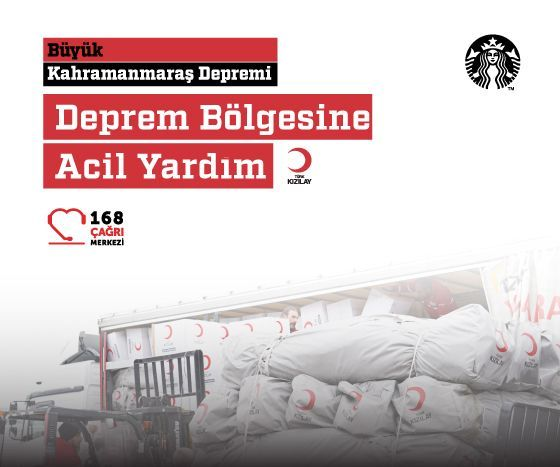

İyi Akşamlar
Ülkemizde gerçekleşen yıkıcı depremin büyük üzüntüsü içindeyiz.
The Starbucks Foundation, Starbucks Corporation ve Alshaya Group birlikteliğiyle, sahadaki çalışmalarımıza ek olarak afetzedeleri desteklemek için yardım kuruluşlarına 19 milyon TL bağışta bulunuyoruz. Bu bağış ile felaketin yıkıcı etkisini hafifletmeye yardımcı olabilmeyi umuyoruz. Hem finansal hem de sahadaki desteklerimizle, hayatı paylaştığımız toplumun yanında olmaya devam etmeye kararlıyız.
Detaylı Bilgi

06.02.2023 tarihinde Kahramanmaraş Pazarcık ilçesinde ve çevre illerde şiddetli bir deprem meydana gelmiştir. Türk
Kızılay, depremin ardından Kahramanmaraş ve depremden etkilenen tüm bölgeler için yardım malzemesi sevkiyatını
başlatmıştır. Depremden etkilenen vatandaşlarımız için deprem bölgelerine giyim, barınma ve beslenme malzeme
sevkiyatlarımız aralıksız olarak devam ediyor, siz de Kızılay Pazarcık Depremi Dijital Destek Kartı satın alarak
depremlerden etkilenenlere yardım edebilirsiniz. Bu ürün dijital bir üründür. Fiziki gönderimi olmayacaktır. Dijital
destek kartı satışlarından elde edilen gelirin tamamı ilgili sivil toplum kuruluşuna aktarılmaktadır ve komisyon
alınmamaktadır.
Destek ol

Yeni kupa ve termoslarımızla tanış!
Kupa ve termos ailemizin yeni üyeleriyle tanışmaya hazır mısın? 🥳 Kışın içini ısıtacak, kahveni sıcacık tutacak yepyeni
Starbucks® bardak, kupa ve termosları Hepsiburada'da seni bekliyor!
Hepsiburada